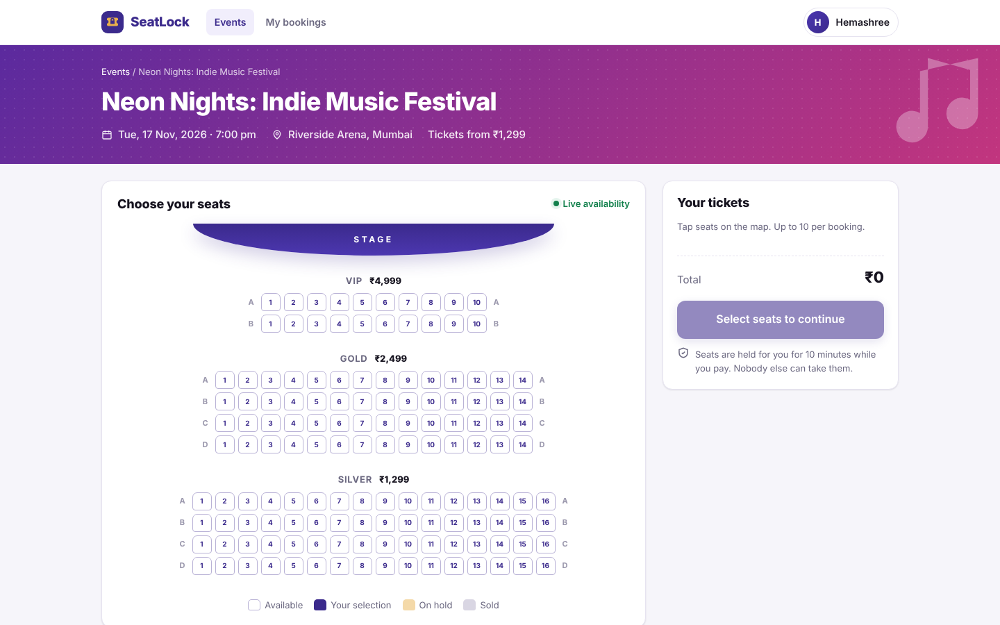
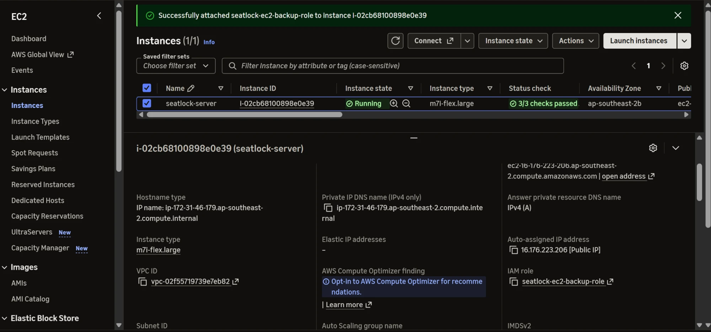

🎟️ SeatLock · deep dive
SeatLock
The complete deep dive · interview prep
1 seat. Thousands of clicks.Exactly one winner.
Java 21 Spring Boot PostgreSQL Redis Kafka Docker AWS
what I used → why I used it → how it's asked
ROADMAP
What we'll cover
2
Architecture: modular monolith
4
Double booking & 3 layers
5
Holds & the expiry sweeper
7
Kafka saga + transactional outbox
8
Redis: cache · rate limit · queue · live map
11
Deployment: Render & AWS
THE PROBLEM
A flash sale, and three guarantees
ticket drop · illustrative
0
buyers
→ 100 seats · same second
must hold, always
1
A seat is never sold to two people
2
A customer is never charged twice
3
An unpaid hold returns to sale automatically
should hold under load
🌊
Spikes degrade gracefully : queue, 409, 429, never a dead database
👀
Browsing never competes with booking for database capacity
ONE BUYER, END TO END
The user flow
🔑 Log inJWT token
👀 Browseseat map
⏳ Queueadmission
🔒 Hold10 minutes
💳 Payasync via
🎫 Confirme-ticket
✉️ Notifyemail ·
payment fails → seats released
AVAILABLE → HELD → BOOKED (or back to AVAILABLE)
ARCHITECTURE
A modular monolith
☕ ONE SPRING BOOT APP · ONE DEPLOYABLE
event seat booking payment notification queue ratelimit auth ticket messaging
booking ⇄ payment ⇄ notification: only via Kafka messages
later, if needed
payment →
extract into its own servicewithout touching booking
🏟️
Classic monolith
one big open hall
🏢
Modular monolith ✓
one building, rooms with doors
🏘️
Microservices
separate buildings, roads between
WHY NOT MICROSERVICES?
The seat hold must be atomic
ONE DATABASE ✓
BEGIN ;
UPDATE seats -- HELD
INSERT INTO bookings
INSERT INTO booking_seats
COMMIT ; all three, or none
plain ACID transaction · atomic · fast
THREE SERVICES, THREE DATABASES ✗
seat svc🐘 db 1
booking svc🐘 db 2
link svc🐘 db 3
? no shared tx
2PC or saga · just to hold a seat
🛡️
A DB constraint can only guard data inside one database
TWO-PHASE COMMIT vs SAGA
Coordinating across databases
Coordinator
DB Aprepare → lock
DB Bprepare → lock
votes: YES · YES → phase 2: COMMIT
🐢
Slow : rows locked across round trips
🧊
Blocking : coordinator dies → locks stuck
SAGA · local commits + compensation
step 1 ✓ →step 2 ✓ →step 3 ✗
← undo step 2, undo step 1
eventual consistency, not instant
🎟️ Hold → one local transaction saga (a gateway can't join a DB tx)
TECH STACK
One job per piece
TOOL JOB IN SEATLOCK THINK OF IT AS ☕ Java 21 + Spring Boot the application, virtual threads the staff 🐘 PostgreSQL source of truth: tx, row locks, constraints the judge : final say🧱 Redis cache · waiting room · rate limits · fast lock the bouncer 📨 Kafka messages between modules, at-least-once the postman 🧬 Flyway · Hibernate · 🐳 Docker schema · object↔row mapping · packaging blueprints & boxes 🧪 Testcontainers · k6 · 📈 Micrometer real tests · load tests · metrics the proof
JAVA 21 · SPRING BOOT
Virtual threads for a waiting-heavy workload
platform threads
1 waiting request = 1 heavy OS thread
virtual threads
waiting request parks · carrier thread serves others
spring.threads.virtual.enabled: true
⚠️ The real limit: Hikari pool = 20 connections that's where back-pressure belongs
POSTGRESQL · FLYWAY · HIBERNATE
Structure, data, and the bridge
transactions row-level locks constraints
FLYWAY · db/migration
V1__create_core_tables.sql
V2__holds_locking_idempotency.sql
V3__outbox_saga_notifications.sql
V4__waiting_room.sql
V5__payment_reconciliation_….sql
V6__customer_contact_and_email.sql
V7__users_and_tickets.sql
V8__event_category.sql
fresh DB → V1…V8 at startup · never edit old ones
HIBERNATE (JPA ORM)
seat .hold(bookingId, expiresAt);
↓ generates
UPDATE seats SET status='HELD' , …
WHERE id = 42 AND version = 7
ddl-auto: validate
entity ≠ table → app refuses to start
DATA MODEL
Tables and state machines
events 1──* seats
bookings 1──* booking_seats *──1 seats
bookings 1──* payments
outbox_events processed_messages tickets users
seat
AVAILABLE → HELD → BOOKED (HELD → AVAILABLE)
booking
HELD → PAYMENT_PENDING → CONFIRMED · CANCELLED · EXPIRED
MONEY
total_cents BIGINT ✓ exact
0.1 + 0.2 = 0.30000000000000004
CHECK (
(status='AVAILABLE' AND booking_id IS NULL ) OR
(status='HELD' AND booking_id IS NOT NULL
AND hold_expires_at IS NOT NULL ) OR …)
THE CORE PROBLEM
The double-booking race
👩 Aliceopens seat 42
🧑 Bobopens seat 42
✍️
Alice writes BOOKED · Bob writes BOOKED
if (seat.isAvailable()) { ⟵ another request slips in HERE
seat.book();
}
make check + write atomic
DEFENCE IN DEPTH
Three independent layers
1
Locking strategy (choose one)
PESSIMISTIC · default OPTIMISTIC REDIS lock
2
@Version on every seat · always on
UPDATE … WHERE id=42 AND version=7
3
Partial unique index · inside Postgres
UNIQUE (seat_id) WHERE active
LAYER 1a · PESSIMISTIC
Lock first, then work
SELECT * FROM seats WHERE id IN (42)
ORDER BY id FOR UPDATE
👩
A takes the lock 🔒 → writes HELD → commit
🧑
B gets lock → reads HELD → 409
"row" = one DATABASE record
41 AVAILABLE free 42 AVAILABLE 🔒 locked 43 AVAILABLE free ✓
👀 Seat-map SELECT → no wait (MVCC)readers never block writers
Cost: waiters hold a connection · pool = 20
LAYER 1b · OPTIMISTIC
Read freely, check at write time
UPDATE seats SET status='HELD' , version = 8
WHERE id = 42 AND version = 7 -- "only if nobody changed it"
✅
A updates → 1 row → version 8
❌
B updates WHERE version=7 → 0 rows → OptimisticLockException → 409
✓ no waiting
great when conflicts are rare
⚡ Flash sale: most do all the work, then fail at the end → wasted effort → slowest in the load test
LAYER 1c · REDIS LOCK
Fail fast, before the database
SET seatlock:seat-lock:42 9f1c…uuid NX PX 5000
key per seat my random token only if not exists expire in 5 s
🧱 Redisone command at a time
🐘 Postgresonly the winner
49 × 409 · instantly · no DB connection
⏱️ PX 5000 → crashed app can't block a seat forever
if redis.call('get' , KEYS[1]) == ARGV[1] then -- still MY token?
return redis.call('del' , KEYS[1])
else return 0 end -- not mine: leave it
LAYER 2 · @VERSION
The version is a fencing token
Buyer A
Buyer B
time →
lock · read v7
⏸️ frozen (GC pause)
5 s · lock expires
lock · read v7 · write → v8 ✓
WHERE version=7 → 0 rows ✗
@Version
private Long version; // Hibernate adds the check
fencing token = proof your read is current
lost updates from other paths someone removes FOR UPDATE future bugs
LAYER 3 · THE DATABASE ITSELF
A partial unique index
CREATE UNIQUE INDEX uq_booking_seats_one_active ON booking_seats (seat_id) WHERE active
booking_seats
SEAT BOOKING ACTIVE 42 #7 false expired 42 #9 false cancelled 42 #12 true current owner 42 #15 true ✗ REJECTED
ERROR: duplicate key value violates unique constraint "uq_booking_seats_one_active"
same trick
payments(booking_id)
WHERE status='SUCCEEDED'
bookings(user_id, idempotency_key)
even if every line of Java were wrong, Postgres refuses
THE MULTI-SEAT TRAP
Deadlocks, and lock ordering
✗ any order
T1holds 5 · wants 3
T2holds 3 · wants 5
wait forever ♾️
✓ always sorted by id
T1 → lock 3 then 5 3 ⏳ waits behind T1
no cycle can form
seatIds = request.seatIds().stream().distinct().sorted() .toList();
deadlock / timeout → 409
AFTER THE SELL-OUT
Fast reject from the cache
🙋 hold seat 42
🧱 cached maptaken?
taken → 409 now no tx · no lock · no connection
available → full locked DB pathcache can only REJECT, never approve
pessimistic throughput · k6
STATUS CODES
Why 409, and not 408, 400 or 500
409
Conflict
valid request · clashes with the
400
✗ nothing wrong with the request
500
✗ nothing broke · no alerts for a lost race
408
✗ client too slow sending · ours arrived fine
Retry the same request? No → pick another seat
429 rate limited + Retry-After
422 idempotency key reused, different body
202 payment accepted, still processing
SEAT HOLDS
Reserve now, pay within ten minutes
AVAILABLE
HELD10:00
BOOKEDpaid ✓
cancel · timer runs out · payment fails
💳 Paying takes time. Without a hold, someone grabs the seat while you type your card.
guarantee #3 → the sweeper
THE EXPIRY SWEEPER
@Scheduled + SKIP LOCKED
-- every 5 s · @Scheduled(fixedDelay)
SELECT id FROM bookings
WHERE status='HELD' AND expires_at < now()
ORDER BY expires_at LIMIT 200
FOR UPDATE SKIP LOCKED
3 app instances, in parallel
app 1 app 2 app 3
different rows · nobody waits · no double processing
1
booking → EXPIRED , seats → AVAILABLE
3
after commit: cache evicted · live map updates
@Transactional
all of it commits together, or rolls back together
TUNING
Why every five seconds?
100 ms
empty queries · burns connections
5 s ✓
60 s
released seats look taken
freshness ←——— trade-off ———→ load
5 / 600 s = 0.8%
nobody notices five extra seconds
⚡
cheap: partial index WHERE status='HELD'
🛡️
correctness doesn't depend on it
INTERVIEW FAVOURITE
Paying at the last second
💳 PaymentFOR UPDATE on booking
🧹 SweeperSKIP LOCKED
booking #12 🔒HELD
↷ skip
Sweeper only touches HELD → never releases a seat being paid for
Sweeper first? → EXPIRED → payment gets 409 hold expired
either way, exactly one wins
IDEMPOTENCY
Twice = once
f( f(x) ) = f(x) · doing it twice has the effect of doing it once
📶 timeout + retry 🖱️ double click 📨 Kafka redelivery 💸 double charge?
POST /api/bookings
Idempotency-Key : a7f3-…
UNIQUE (user_id, idempotency_key)
↩️
retry → same booking + Idempotent-Replayed
422
same key, different seats
👯
loser of a twin race returns the twin's booking
NEVER CHARGE TWICE
Five layers for payments
1
Idempotency-Key required · UNIQUE(idempotency_key)
2
SHA-256 fingerprint of user + booking + token → key reused differently → 422
3
One success per booking · UNIQUE(booking_id) WHERE status='SUCCEEDED'
4
Gateway gets the same key (like Stripe) → redelivery can't charge twice
5
Row lock on record · update only if still PENDING
PAYMENTS
Why asynchronous?
🙋 clientPOST /payments
SeatLock API
🏦 gatewayslow · sometimes down
⏳ locks held while waiting?
202
✅ answer 202 Accepted immediately · the charge happens in the background
🔌 decoupled: payment can scale, or move to its own service
THE CLASSIC BUG
The dual-write problem
db.save(payment); // write 1 → Postgres
kafka.send(message); // write 2 → Kafka
failure 1 · lost message
DB commit ✓ never happens
booking stuck in PAYMENT_PENDING
failure 2 · phantom message
Kafka send ✓ rollback
two systems can't commit together (without 2PC) → avoid the second write
THE FIX
The transactional outbox
ONE DB TRANSACTION
UPDATE bookings … PAYMENT_PENDING
INSERT INTO payments …
INSERT INTO outbox_eventsCOMMIT
commit together, or fail together
relayevery 200 ms
📨 Kafkaacks=all
read unpublished (id order) → send → set published_at
send fails → stop the batch → order preserved
THE REMAINING GAP
At-least-once, so consumers are idempotent
send ✓ →Kafka ack ✓ →💥 crash before published_at →restart: send AGAIN
💳
payment processor: skip if not PENDING
🎟️
booking listener: act only if PAYMENT_PENDING , row-locked
-- inbox, same tx as the side effect
INSERT INTO processed_messages
(consumer, message_id) VALUES (?, ?)
ON CONFLICT DO NOTHING -- 0 rows → duplicate → skip
ordering · key = booking id
partition 0 #12 requested #12 completed
partition 1 #15 requested #15 completed
same booking → same partition → in order
CHOREOGRAPHY · NO ORCHESTRATOR
The payment saga, end to end
1
API · one tx: lock booking · payment PENDING · booking PAYMENT_PENDING · outbox PaymentRequested
2
Payment module consumes → calls gateway, no DB transaction open
3
short tx: SUCCEEDED / FAILED · outbox PaymentCompleted
4
Booking module ✓ success → CONFIRMED · seats BOOKED · tickets issued (one tx)
5
✗ failure → compensate : CANCELLED · seats released
6
Notification consumes booking event → email after commit
WHEN THINGS FAIL
Dead letters and the reconciler
poison message
try 1 2 3 4 →topic-dlt
3 retries, 1 s apart · partition never blocked
DLT partition gotcha
record from partition 2 → dlt partition 2✗ · declared with 3 ✓
provider down for 10 minutes
payment PENDINGseats still locked
🔁 reconciler · every 30 sre-drive after 1 min, SAME key → no double charge
⌛ give up after 15 minFAILED → saga releases seats · refund check logged
NO FREE KAFKA?
Same outbox, different transport
messaging.mode = kafka
outbox → relay → 📨 KafkaMessageHandler beans
messaging.mode = local (demo)
outbox → local dispatcherthe SAME handler beans
marked published only after success → still at-least-once
business code unchanged · lose: multi-instance scaling
SURVIVING THE RUSH
Why Redis?
⚡ < 1 ms · in memory ⚛️ atomic commands ⏱️ keys expire (TTL) 📜 Lua scripts 🔗 shared by all instances
Never the source of truth. Redis down → cache falls back to Postgres · rate limiter fails open · bookings stay correct
SEAT-MAP CACHE
Evict after commit, not before
seatlock:cache:seats:{eventId} TTL 5 s → X-Cache: HIT / MISS
✗ evict BEFORE commit
1. writer evicts cacheOLD rowOLD datastale value survives
✓ evict AFTER commit
@TransactionalEventListener (
phase = AFTER_COMMIT )
next reader sees the new state
display only · holds use the locked DB path
TOKEN BUCKET
Rate limiting in one Lua script
per user · capacity 20 · refill 5/s
-- ONE atomic step
local now = redis.call('TIME' ) -- Redis clock
tokens = min(cap, tokens + elapsed*refill)
if tokens >= 1 then tokens -= 1; allowed
else retryAfterMs = … -- → 429
HSET key tokens ts; PEXPIRE …
🪣
user 20/5s · IP 200/50s · login 10, then 1 per 10 s
🔓
Redis down → fail open · DB still guards correctness
VIRTUAL WAITING ROOM
A fair line, admitted atomically
ZADD NX queue:{event}:waiting user → join time (FIFO)
-- every second · ONE Lua script
ZREMRANGEBYSCORE admitted -inf now -- expired
room = min(maxActive - ZCARD(admitted), batch)
ZPOPMIN waiting room → ZADD admitted
SET token:{user} uuid PX ttl
several instances run it → nobody admitted twice , room never overfilled
booking requires X-Queue-Token ≤ 100 active shoppers
SERVER-SENT EVENTS
A live seat map on every screen

live seat map
SSE vs WebSockets
one-way server → browser · plain HTTP
coalesced · flush every 300 ms
1,000 holds → a few small queries
heartbeat 20 s cap 1,000 → 503 in-memory · scale-out needs Redis pub/sub
SECURITY
JWT, BCrypt, and no CSRF
BCrypt $2a$10$N9qo8uLOickgx2ZMRZoMye IjZAgcfl7p92ldGxad68LJZdL17lhWy salted · slow on purpose
JWT · HMAC-SHA256 · 7 days · checked without a DB lookup
eyJhbGciOiJIUzI1NiJ9 .eyJzdWIiOiJ1c2VyLTQyIiwicm9sZXMiOlsiVVNFUiJdfQ .Q2y6…sig
🍪
no cookies, no sessions → no CSRF
🕵️
same answer, same time (dummy hash) → no account probing
404
for someone else's booking, not 403
⚠️
stolen token valid until expiry → short-lived + refresh tokens
E-TICKETS & CHECK-IN
One scan wins
ticket · one per seat
SEATLOCK-9F1C…E07A
128 random bits · checked server-side
UPDATE tickets SET status='USED'
WHERE code = ? AND status = 'VALID' -- 1 row = admit
20 gates scan the same ticket at once
1 admitted · 19 already used
📷 live camera 🖼️ photo → ZXing on server ⌨️ typed code
PROVING IT
Real infrastructure, real races
🐳 Testcontainers Postgres Redis Kafka no mocks
CountDownLatch start gate · 200 attempts · 1 seat
every strategy
1
winner
0
× 409 · 0 double
honest: pool of 64 threads → ≤ 64 truly simultaneous saga tests end-to-end · Awaitility
k6 · 500 VIRTUAL USERS · 100 SEATS
The numbers
🚨 run fails if /stats ever reports a double-booked seat, across every booking ever made
Pessimistic
0 req/s · p95 448 msOptimistic
0 req/s · p95 473 msRedis lock
0 req/s · p95 418 ms
100 / 100 seats held 0 double-bookings
🔐 JWT on every request: 2,411 → 1,506 req/s (p95 631 ms) · still 0 double-bookings
OBSERVABILITY
Micrometer → Prometheus → Grafana
seatlock_holds_total{result="success" ,strategy="PESSIMISTIC" } 4
seatlock_holds_total{result="conflict" ,strategy="PESSIMISTIC" } 129
seatlock_hold_duration_seconds → p50 · p95 · p99
seatlock_booking_transitions_total{status}
seatlock_outbox_backlog 0
outbox backlog
growing → relay or Kafka stuck
INFO [seatlock,6f1a2c… ,9b3e… ] Booking 12 confirmed ← same traceId across HTTP and Kafka headers
DOCKER
Servers, clients, and containers
app = client libraries · servers = separate programs
postgresql driver → :5432 :6379 :9092
# docker-compose.yml
postgres: ports: ["127.0.0.1:5432:5432" ]
redis: ports: ["127.0.0.1:6379:6379" ]
kafka: ports: ["127.0.0.1:9092:9092" ]
# localhost only → not reachable from the network
multi-stage Dockerfile
JDK 21 · build jar →JRE 21 · run · non-root
class data sharing · free 0.1 CPU
FREE PUBLIC DEMO
Render · Neon · Upstash · Brevo
🚀 Renderapp · Docker container
🐘 NeonPostgres
🧱 UpstashRedis
✉️ Brevoemail
DB_URL=jdbc:postgresql://…neon…
REDIS_HOST=…upstash.io REDIS_SSL=true
no Kafka · local outbox pool = 5 metrics private admit tick 30 s
AWS · FULL STACK WITH KAFKA
One EC2 instance
EC2 · Ubuntu · m7i-flex.large · 8 GB
app :8080 public postgres 127.0.0.1
redis 127.0.0.1 kafka 127.0.0.1
~3 GB needed → a 1 GB instance runs out of memory
🔥 security group8080 ← anywhere · SSH 22 ← my IP /32

seatlock-server · running · IAM role attached
🧱
data stores: no rule + localhost
🔑
SSH key pair · no passwords
🌐
IP changes on stop/start → Elastic IP
AWS · BACKUPS
Nightly backups to S3 with an IAM role
🖥️ EC2cron · 02:00 IST
pg_dump | gzip | aws s3 cp -
🪣 S3 · privatepostgres/*.sql.gz · expire 30 d
IAM role · least privilege
"Action": ["s3:PutObject" , "s3:GetObject" ,
"s3:AbortMultipartUpload" ]
"Resource": "arn:aws:s3:::bucket/postgres/*"
+ s3:ListBucket on that bucket · no delete
⬆️
S3 doesn't pull · the server pushes
🎫
no access keys · temporary, rotating credentials
♻️
restore test into a separate database
IF THIS WERE A COMPANY
The production path
⚖️ ALBHTTPS · ACM cert
ECS Fargateapp tasks across
RDS PostgreSQL · PITR · Multi-AZ
ElastiCache Redis
Amazon MSK (Kafka)
λ Lambda? Not a fit
long-lived SSE streams sweeper · relay · reconciler Kafka consumers JVM cold starts
KNOW YOUR LIMITS
Trade-offs, honestly
📡
SSE subscribers in one instance's memory → Redis pub/sub fan-out
💸
Late payment success after cancel is logged, not refunded → RefundRequired event
🧩
Redis Cluster needs hash tags · seat map is one blob → per-section keys
📤
Relay holds a DB tx while waiting for Kafka → send, then mark in a short tx · or CDC
🧪
Load test: one machine, one IP, rate limit off → correctness, not capacity
INTERVIEW · CORE
Questions you will hear
Q · How do you stop two people booking the same seat?
Row lock + version check + partial unique index. Each alone is enough.
Q · Pessimistic or optimistic?
Pessimistic for high contention (flash sale). Optimistic when conflicts are rare.
Q · Why isn't a Redis lock enough?
It can expire mid-pause. The version fences the stale writer; the index is final.
Q · Why a transactional outbox?
DB-then-Kafka can lose a message. The outbox commits both together.
Q · Delivery guarantee?
At-least-once → every consumer is idempotent.
INTERVIEW · THE HARD ONES
Follow-ups that test depth
Q · Redis lock expires mid-transaction?
Version check / unique index rejects the late writer. Correct; only the shielding is lost.
Q · Redis goes down?
Cache → Postgres, rate limiter fails open, bookings stay correct.
Q · Why not Kafka exactly-once?
Only covers Kafka→Kafka. My side effects hit Postgres and an external gateway.
Q · Scale to a million users?
Waiting room · stateless instances · Redis pub/sub · partition by event · managed stores.
Q · What would you change?
Trace context in the outbox · CDC instead of polling · short-lived access tokens.
SAY IT IN YOUR OWN WORDS
The 30-second pitch
“SeatLock is a ticket-booking backend for flash sales, where thousands want the same seat at once. Its core guarantee is zero double-bookings .
I enforce it in three layers : a configurable lock, a version column, and a partial unique index.
Payments run as a Kafka saga with a transactional outbox; Redis handles the waiting room, rate limiting and caching.
Proven with 200 concurrent requests on real infrastructure and a 500-user load test at ~2,400 req/s, zero double-bookings , running on AWS with nightly backups.”
RECAP
Everything, in one screen
🏢
Modular monolith → one ACID hold
🛡️
3 layers: lock · version · unique index
🧹
Holds + SKIP LOCKED sweeper
🔁
Idempotency wherever money moves
📨
Kafka saga · outbox + inbox
🧱
Redis shields the database
🧪
Real tests · real numbers
☁️
Render + AWS · honest limits